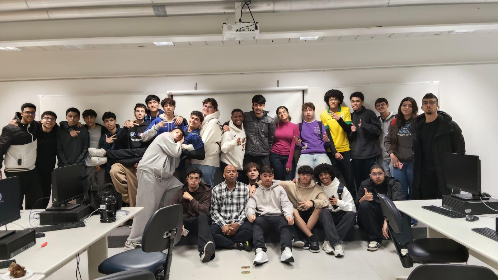
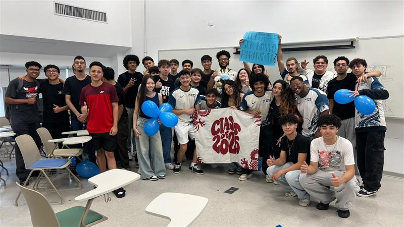
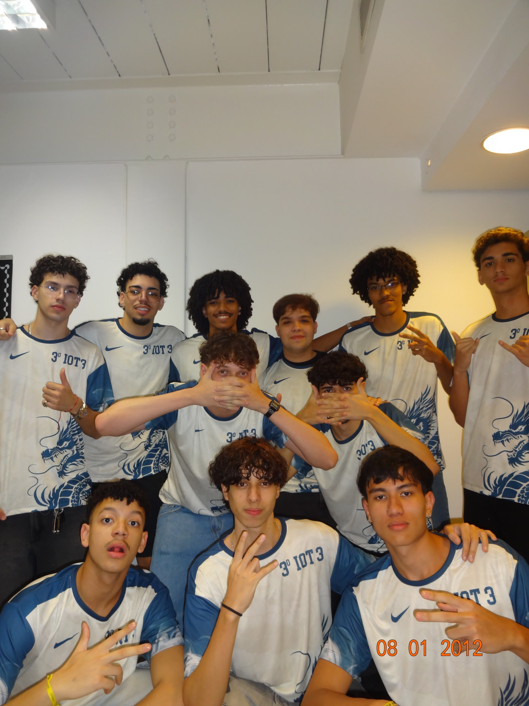

Recordações
Memórias
Registros marcantes, parcerias e recordações da minha jornada de três anos no ensino médio.
Álbum
Nesta seção do meu portfólio, separei algumas das lembranças mais marcantes que vivi durante os três anos no SENAC Nações Unidas, junto com meus amigos e colegas de turma. São registros de momentos de parceria, descontração e amizade que deixaram essa caminhada ainda mais inesquecível. Cada foto mostra um pouco dessa história e guarda recordações que vou carregar comigo mesmo após concluir essa fase da minha vida.

